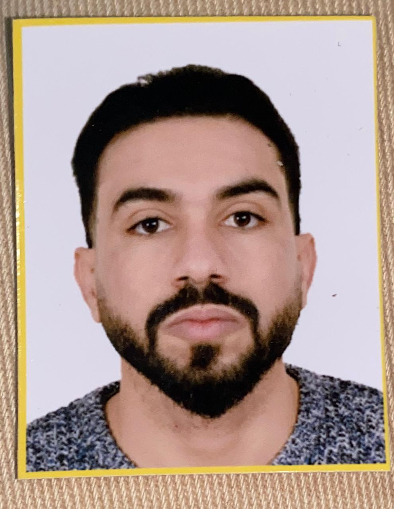

Professeur stagiaire – Physique Chimie
CRMEF Fès | 2025 – 2026
Bienvenue dans mon portfolio pédagogique. Ce site présente mon parcours académique et les travaux réalisés dans le cadre de ma formation au CRMEF de Fès.
Il reflète également mon intérêt pour l'intégration des technologies numériques dans l'enseignement des sciences.
Mon objectif est de contribuer à améliorer l’enseignement des sciences en utilisant des approches pédagogiques modernes basées sur l’expérimentation et les technologies éducatives.
Nom : Oussama Omrane
Spécialité : Physique – Chimie
Formation :
Compétences :
La formation au CRMEF vise à développer les compétences pédagogiques et didactiques nécessaires à l’enseignement des sciences au secondaire.
Modules étudiés :
Le stage pratique constitue une étape essentielle dans la formation des enseignants.
Il permet d'observer les pratiques pédagogiques et de mettre en œuvre les compétences acquises.
Activités réalisées :
📧 Email : omraneoussama47@gmail.com
📍 Ville : Fès
🎓 Institution : CRMEF Fès